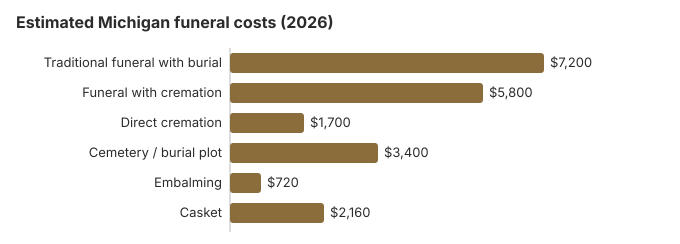

Funeral Costs in Michigan: What Families Pay in 2026
A Michigan funeral bill is built from many separate charges, the service fee, casket, plot and headstone among them, and most are open to negotiation. Knowing the usual range for each is what separates a $5,760 total from a $9,000 one.
Michigan Funeral Prices, Line by Line
LARA licenses Michigan funeral homes but does not regulate what they charge.
| Service | Average Cost | Range |
|---|---|---|
| Traditional funeral with burial | $7,200 | $5,400 – $9,360 |
| Funeral with cremation | $5,800 | $4,640 – $7,540 |
| Direct cremation | $1,700 | $1,190 – $2,380 |
| Cemetery / burial plot | $3,400 | $1,700 – $6,800 |
| Embalming | $720 | $500 – $1,500 |
| Casket | $2,160 | $720 – $5,760 |
How to read these numbers: they are estimates from our model, not prices gathered from Michigan providers; treat them as a guide rather than a quote or advice. Methodology and disclaimer.
State sources: Michigan MDHHS.

Major Cities in Michigan
Estimates for Michigan's larger cities:
Michigan Funeral Assistance
- SER pays less when there's no memorial service, so check with MDHHS how your plans affect the amount before booking.
- Social Security learns of the death from the funeral home, but the $255 has to be claimed by the spouse or child at 1-800-772-1213 within two years.
- For a Michigan veteran, the payer files VA Form 21P-530EZ; a death on or after October 1, 2026 that was not service-related can bring a $1,032 burial allowance and a separate $1,032 plot allowance, as explained in our veteran burial benefits guide.
- Medicaid and charity options: our assistance guide and funerals without money.
Educational Resources
- Funeral Consumers AllianceIndependent nonprofit consumer advocacy for funeral rights
- FTC Funeral RuleThe federal rule protecting funeral consumers
- Funeral Insurance GuideCompare final expense and burial insurance options
- Best Burial Insurance CompaniesSide-by-side comparison of top burial insurance providers
- Payment Assistance GuideGovernment programs and financial help for funeral costs
- Insurance Plan ComparisonCompare coverage, premiums, and payout speed across providers
Compare Funeral Costs
- Average Funeral Cost in 2026National cost breakdown with real prices
- Cremation vs. Burial Cost ComparisonSide-by-side price comparison to help you decide
- Funeral Cost BreakdownEvery line item explained: know what you're paying for
- Cheapest Funeral OptionsLower-cost alternatives, with typical price ranges
- Direct Cremation: Most Affordable OptionNFDA 2023 median $2,645 with a family-supplied container (latest available)
- How to Compare Funeral PricesStep-by-step guide to getting the best price
Michigan's Cheaper Options
| Arrangement | Est. Cost | Covers |
|---|---|---|
| Direct cremation | $1,700 | Pickup, cremation and return of the ashes, with no viewing or service. |
| Direct burial | $3,600 | Unembalmed burial with no visitation; the cemetery charges separately. |
| Green burial | $3,960 | A shroud or simple casket, no embalming, where a Michigan cemetery permits it. |
| Cremation + memorial | $5,800 | Cremation now, a service later |
| Traditional funeral | $7,200 | Visitation, ceremony and burial |
Cremation or Burial in Michigan
Cremation
- Direct, near $1,700
- Near $5,800 with a service
- No grave to buy
- Memorial timing is flexible
- 58% of Michigan families
Traditional Burial
- Service, near $7,200
- Plot, near $3,400 extra
- Vault or liner generally required
- A lasting grave
- Metal caskets: about $2,500 is the US median (NFDA 2023 General Price List Study); Michigan prices depend on the seller
FTC Protections in Michigan
To report a Michigan home that breaks the rule, use ftc.gov, or ask the nonprofit Funeral Consumers Alliance for advice.
More Michigan Cost Guides
Michigan guides:
Cremation Costs in Michigan
Michigan cremation from about $1,700 to $5,800 with a service, plus urns and scattering.
Burial Costs in Michigan
The pieces of a Michigan burial, plot (about $3,400), casket, vault, marker and opening, totaling $16,320 to $20,820.
Michigan Customs
Michigan funerals lean practical: viewings are usual but short, the luncheon is often at church or home instead of the funeral home, and cremation with a graveside or memorial service is increasingly common. That keeps the Michigan average, about $7,200, below the national median.
Why Michigan Prices Differ
Michigan prices sit near the middle of the country, below the $8,300 national median in many towns, and metro quotes can run 10-30% above rural ones. Michigan also lets anyone 18 or older of sound mind name a "funeral representative" in a dated, signed writing; that person can decide on funeral arrangements and cremation and may collect the cremated remains right after the cremation. Whoever decides, the handling of the body must be supervised by someone licensed in mortuary science (MCL 700.3206).
Michigan's 58% cremation rate is 5.4 points below NFDA's 63.4% national projection for 2025. Direct cremation is usually sold at a flat price, near $1,700 in our table.
Items to Question on a Michigan Bill
- Embalming called mandatory. In Michigan it is required only in narrow cases.
- Paperwork: death certificates, the permit and filing fees can add $200–$600.
- Weekend or holiday surcharges of 15–25%, roughly $1,080–$1,800 on a $7,200 funeral.
- Packages that bundle things you don't want; every item must also be priced separately.
Steps for a Michigan Funeral
- Burial or cremation: cremation in Michigan or burial in Michigan.
- If money is tight, look at Social Security benefits, veteran benefits, Medicaid assistance, or crowdfunding; in Michigan, also ask your local MDHHS office.
Michigan death certificates cost $34
The Michigan Department of Health and Human Services charges $34 for a death record search that includes one certified copy, and $16 for each additional identical copy ordered at the same time (MCL 333.2891). Rush processing is $12 more, and each extra year searched, if you don't know the year of death, is $12. Online orders carry a $14 processing fee (MDHHS, ordering vital records; checked October 29, 2026).
- Open records: Michigan death records are not restricted, so anyone can order a copy. State records go back to 1867.
- Short or long form: both cost the same; ask whether the insurer or bank needs the version that shows the cause of death.
- Mail orders: to Vital Records Requests, P.O. Box 30721, Lansing, MI 48909, payable to the State of Michigan. MDHHS lists about 4 to 6 weeks of processing, or 2 to 3 weeks with rush, plus mail time. Questions go to 517-335-8666.
- County clerks also issue death certificates, often more quickly. The City of Detroit's vital records office closed in 2013; Detroit records are now with Wayne County or the state.
Plan on one certified copy for each insurer, bank, retirement plan and the Secretary of State if a vehicle title has to change hands. Ordering four copies at once from the state costs $82; ordering a fourth separately later costs $34 again.
Michigan's funeral regulator, SER burial help and veterans cemeteries
Michigan's Department of Licensing and Regulatory Affairs licenses funeral homes; call 517-241-9221 if a home won't show prices or pressures you.
Michigan is one of the nine states where a licensed funeral director has to handle some steps: filing the death certificate, moving the body, supervising the disposition and getting permits (Mich. Comp. Laws § 700.3206, as summarized by the Funeral Consumers Alliance). The family can still take on the rest, from preparing the body to a service at home. There is no set waiting period before cremation, but a permit is needed (Mich. Comp. Laws § 333.2848), and the county medical examiner has to review the death and approve the cremation first (MCL 52.205). Many counties charge a fee for that review, so ask whether a quote includes it.
State Emergency Relief burial payments
Michigan's SER program pays fixed amounts for 2026: $875 for burial with a memorial service and $610 without; $640 for cremation with a memorial and $390 without (Michigan MDHHS). Apply through MI Bridges or the local MDHHS office; the request must be made no later than 10 business days after the burial, cremation or donation, and the funeral home's total charge has to stay within the SER limits for the payment to be made.
Prepaid funerals
Michigan's Prepaid Funeral and Cemetery Sales Act requires money paid for a prepaid funeral to be held in escrow or covered by insurance, and sellers must be registered with LARA. Ask to see the contract's cancellation terms and who holds the funds before you pay.
Veterans
Fort Custer National Cemetery near Augusta (269-731-4164) and Great Lakes National Cemetery in Holly, northwest of Detroit (248-328-0386), are booked by the funeral home through the VA's National Cemetery Scheduling Office at 800-535-1117.
Burial transit and out-of-state deaths
When a Michigan resident dies in another state, the funeral director there files that state's death certificate and a burial-transit permit travels with the body; the certificate is ordered from the state where the death occurred, not from Michigan. If the body has to travel by common carrier and won't arrive within 48 hours of death, Michigan's transport rules call for embalming, so ask whether refrigeration and a direct drive are possible instead.
Michigan checklist
- Get a General Price List from each home; it must be given to you on request.
- Make the embalming and viewing decision first.
- Apply for SER at the local MDHHS office before the service.
- For a veteran, ask about Great Lakes or Fort Custer before buying a plot.
- Complaints about a home's prices go to LARA, 517-241-9221.
Frequently Asked Questions
How much does a funeral cost in Michigan?
Our estimates are about $7,200 for a traditional funeral, $5,800 for cremation with a service and $1,700 for direct cremation, with around $3,400 more for a plot. Compare two or three local price lists to get your own number.
How much can cremation save in Michigan?
More than $5,500. Direct cremation is about $1,700, and a traditional funeral with burial is about $7,200 even before a grave is bought. Independent Michigan homes often undercut national chains.
What protections apply in Michigan?
Federal rule 16 CFR 453 guarantees an itemized price list, phone quotes, and acceptance of a casket or urn bought elsewhere with no handling fee. Michigan law requires a licensed funeral director for filing the death certificate, moving the body, supervising the disposition, and obtaining permits (Mich. Comp. Laws § 700.3206, per the Funeral Consumers Alliance). You can confirm a Michigan license or file a complaint with the Michigan Department of Licensing and Regulatory Affairs at 517-241-9221.
Where can a Michigan family save?
Shop before you sign anything. Many Michigan townships run their own cemeteries, which rarely advertise and can cost half what a private cemetery charges, so call the township or county clerk. Locally owned homes tend to post clearer prices than chain-owned ones. If cost is the main concern, direct cremation near $1,700 is the lowest-priced route in the state.
Does Michigan require embalming?
Only in narrow cases. Michigan's transport rules (Mich. Admin. Code R 325.1 and 325.2) require embalming for bodies of people who died of certain diseases, such as diphtheria or plague, and for any body shipped by common carrier that cannot reach its destination within 48 hours of death. If family members dispute disposition and refrigeration is not available, the funeral home may embalm while the court decides (MCL 700.3207).
Otherwise it is optional, and declining it takes about $720 off a Michigan bill on this page's estimate.
Is Michigan expensive for funerals?
No. Our $7,200 Michigan estimate for a traditional funeral is 13% below the $8,300 national median, in line with moderate Midwest prices.
What's the cheapest way to do a funeral in Michigan?
Direct cremation, from about $1,700, which covers transport, the cremation and return of the ashes and nothing more. Direct burial comes next at around $3,600 and still avoids viewing, ceremony, and embalming, though the $3,400 Michigan plot estimate still applies.
How do I find a lower-cost Michigan provider?
Ask several Michigan funeral homes for their General Price Lists and compare the direct cremation line, which starts around $1,700 here. Compare the basic services fee too, since every arrangement carries it.
The University of Michigan Medical School's Anatomical Donations Program (734-764-4359) accepts whole-body donors. A funeral home has to be hired to deliver the body to Ann Arbor, and distance or transport cost can rule a donation out, but there is an expense-free route for pre-registered donors who die as Michigan Medicine inpatients. Remains are cremated, and the ashes are returned if the family asked in writing.